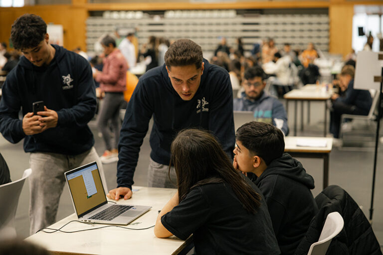

Grupo de estudantes a colaborar num espaço de aprendizagem tecnológica, com um portátil sobre a mesa e um ambiente de trabalho em equipa.

Grupo de estudantes a colaborar num espaço de aprendizagem tecnológica, com um portátil sobre a mesa e um ambiente de trabalho em equipa.
Eu sou um estudante de informática com interesse em programação, sistemas e redes.
O meu curso pretende:
Funções, listas e dicionários; validação de entradas, tratamento de exceções e exportação de dados.
Arrays, matrizes, structs, funções e headers; validação de dados e cálculo de médias. VisuAlg (Portugol) e Flowgorithm: pseudocódigo e fluxogramas.
Visual Studio Code · Visual Studio · Code::Blocks · Herd · GitHub · HTML · CSS
Projetos pessoais com Automate (LlamaLab): fluxos visuais, eventos, condições, logs e prototipagem com SQLite no Android.
MySQL · MySQL Workbench · Supabase
Sistemas de bases de dados em estudo: PostgreSQL, MongoDB, SQL Server e SQLite.
Ferramentas em estudo: pgAdmin, DBeaver, DataGrip, psql e pgBackRest
Figma · DaVinci Resolve · Premiere Pro · Autodesk 3ds Max
Português: nativo
Inglês: fluente
Francês: intermédio
Alemão: pré-intermédio
OFICINA - Escola Profissional do Colégio das Caldinhas
Contacto da escola: info@oficina.pt | +351 252 830 900
11.º ano (em curso) · 2026/2027
Curso profissional GPSI
Técnico de Gestão e Programação de Sistemas Informáticos
Áreas: programação e sistemas de informação; sistemas operativos; arquitetura de computadores; montagem, configuração e diagnóstico; redes; microprocessadores; robótica; design e multimédia.
Aulas de robótica no 3.º ciclo do ensino básico (7.º ao 9.º ano).